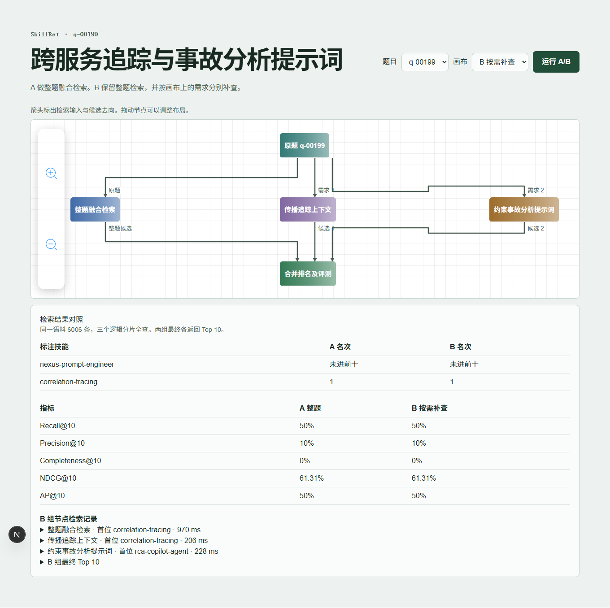

q-00199 跨服务追踪与事故分析提示词
追踪技能保持第 1。nexus-prompt-engineer 未进入任何检索节点的候选前十。
A/B 指标
| 指标 | A 整题 | B 按需求补查 |
|---|
| Recall@10 | 50.00% | 50.00% |
| Precision@10 | 10.00% | 10.00% |
| Completeness@10 | 0.00% | 0.00% |
| NDCG@10 | 61.31% | 61.31% |
| AP@10 | 50.00% | 50.00% |
数据集标注技能的名次
| 标注技能 | A | B |
|---|
| nexus-prompt-engineer | 未进前十 | 未进前十 |
| correlation-tracing | 1 | 1 |
原题与 B 组各节点
整题融合检索
We're building an internal observability layer for our "MercuryPay" payment processing platform, which is a distributed system with ~40 microservices written in Go and TypeScript. I need help with two connected things. First, I need you to design and implement a robust distributed tracing system with correlation IDs that propagate through HTTP headers and Kafka message metadata across all our services — each incoming API request should generate a unique trace ID that gets passed through every downstream call, with parent/child span tracking so we can visualize the full request lifecycle from our API gateway through auth, fraud detection, ledger, and notification services. We need middleware for both our Go (chi router) and TypeScript (Express) services, plus a Kafka interceptor that injects/extracts trace context from message headers. Second — and this is the part I'm struggling with — I need you to craft a detailed, high-precision system prompt for our internal GPT-4-based incident analysis assistant that will consume these trace logs and correlation data to help on-call engineers diagnose failures. The current prompt we wrote is way too vague ("you are a helpful assistant that looks at traces") and the model keeps hallucinating root causes or ignoring span timing data. I need you to walk me through building a prompt that constrains the model to only reason from actual trace/span evidence, correctly interprets our correlation ID hierarchy, handles partial trace data gracefully, and outputs structured incident hypotheses ranked by confidence. Use your /audit mode on our existing prompt first, then help us rebuild it from scratch with proper grounding instructions.
- correlation-tracing
- distributed-tracing
- golang-observability-opentelemetry
- distributed-tracing-specialist
- distributed-tracing
- request-tracing
- otel-observability
- golang
- monitoring-observability
- jaeger-tracing-specialist
传播追踪上下文
Design distributed tracing across Go chi, Express and Kafka services. Propagate correlation IDs and parent-child spans over HTTP and message headers, with middleware and Kafka context injection and extraction.
- correlation-tracing
- golang-observability-opentelemetry
- distributed-tracing
- distributed-tracing-specialist
- golang-http-frameworks
- request-tracing
- jaeger-tracing-specialist
- golang
- distributed-tracing
- go-grpc
约束事故分析提示词
Audit and rewrite an incident analysis system prompt that reasons from trace and span evidence only. Use timing and correlation hierarchies, handle partial traces, and produce structured incident hypotheses ranked by confidence.
- rca-copilot-agent
- sequential-thinking
- incident-analysis
- incident-responder
- performance-correlation
- error-coordinator
- incident-response-plan
- apex:debug
- timeline-forensics
- correlation-tracing
最终候选
A Top 10
- correlation-tracing
- distributed-tracing
- golang-observability-opentelemetry
- distributed-tracing-specialist
- distributed-tracing
- request-tracing
- otel-observability
- golang
- monitoring-observability
- jaeger-tracing-specialist
B Top 10
- correlation-tracing
- distributed-tracing
- golang-observability-opentelemetry
- distributed-tracing-specialist
- golang-http-frameworks
- rca-copilot-agent
- sequential-thinking
- distributed-tracing
- request-tracing
- otel-observability
RSI 实测截图
